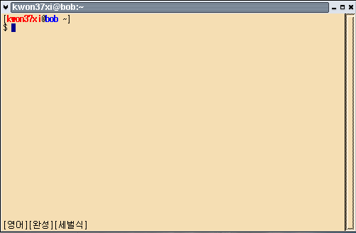

왜?
사실 프롬프트 같은 거에 거의 신경 안쓰는 편인데, 하다보니 필요해졌다.
윈도우에서 다른 유닉스 서버에 접속해 작업할 때는 별도의 클라이언트를 사용하니 상관 없겠지만, 리눅스에서는 보통 한텀이나 X텀을 띄우고 telnet 혹은 ssh 명령으로 다른 서버에 접속한다.
이때 내 컴퓨터의 프롬프트와 서버측의 프롬프트가 서로 비슷하면, 이게 내가 서버에 접속한 상태인지 내 로칼에 있는 상태인지 헷갈릴 경우가 많다.
아무리 프롬프트에 접속한 서버의 이름을 넣어 두더라도 헷갈리는 건 어쩔 수 없다.
그래서 로칼 프롬프트를 컬러로 하기로 했다.
나의 새로운 프롬프트
~/.bashrc 에 다음과 같이 해 둔다..
PS1='e[0m[e[1;31mue[0m@e[1;34mhe[0m w]
$ '

참조
다음에서 프롬프트 관련한 KLDP 사람들의 다양한 예를 볼 수 있다. 또 다른 참조 링크들과 함께...
http://bbs.kldp.org/viewtopic.php?t=30236